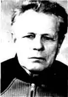

Олексій Павлович ПриходькоОлексій Павлович ПРИХОДЬКО 50 років працював у районній газеті, писав вірші. Один з них — "Доля".
Вітер віє вночі,
Під вікном завиває. Я сиджу в самоті І у вітра питаю: Ой скажи мені правду, Де тепер моя доля, Чи у дебрях лісних, Чи одна серед поля? Ой, скажи мені правду, Як же жити без долі? Як осінній той лист, Що валяється долі. Може вернеться доля, Як та пташка весною, Махне щиро крилом, Пролетить наді мною. І згадаються дні, Що так швидко минули. Тільки в серці моїм Вони ще не заснули. Освіту Олексій Павлович здобував самостійно. В 1934 році почав працювати в газеті "Соціалістична перебудова". В 1940 році виконував обов'язки редактора Красноградської районної газети "Трибуна більшовика". З 1961 року Приходько О. П. член спілки журналістів. В свої вісімдесят років він ще зрідка дописує в районну газету "Вісті Красноградщини". За довголітню й бездоганну роботу він нагороджений кількома медалями.